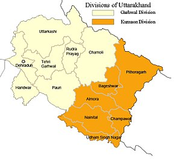
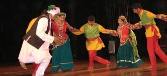
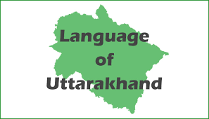
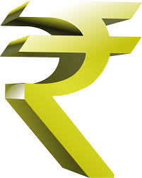
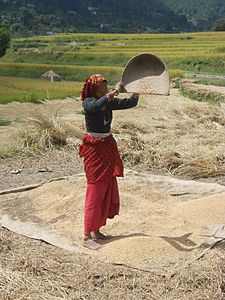
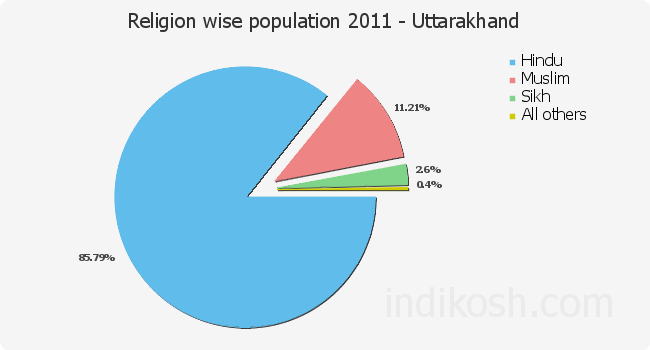
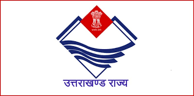

Demographics

Uttarakhand is the 27th State of the Republic of India. It is the 20th Largest (in terms of Population) and 19th Largest (in terms of Area) state of India. The native people of Uttarakhand are generally called Uttarakhandi and sometimes specifically either Garhwali or Kumaoni depending on their place of origin in either the Garhwal or Kumaon region. There are 13 districts in Uttarakhand which are grouped into two divisions, Kumaon and Garhwal. Uttarakhand was carved out on 9 Nov 2000, from the state of Uttar Pradesh. Uttarakhand has a population of 10,116,752 (0.84% of India) according to the 2011 Census. It has an area of 53,483 sq. km (1.62% of India), comparable to the size of Costa Rica.
Ethnic groups

Uttarakhand has a multiethnic population spread across two geocultural regions:the Garhwal, and the Kumaon. A large portion of the
population is Rajput including members of the native Garhwali, Kumaoni and Gujjar communities, as well as a number of immigrants.
Uttarakhand has the highest percentage of Brahmins of any state in India, with approximately 20% of the population being Brahmin.
Languages

Hindi belonging to Indo-Aryan languages is the sole official language of Uttarakhand and is spoken by 87.95% of the population
(figure includes Garhwali, Kumaoni and Jaunsari as variants of Hindi). Sanskrit is given the status of second official language.
Many Tibeto-Burman languages are also spoken inthis region, including Bhoti, Jad, Rangkas, Darmiya, Byangsi, and Chaudangsi.
Economy

The Uttarakhand state is the second fastest growing state in India. It's gross state domestic product (GSDP) (at constant prices) more than doubled from₹24,786 crore in FY2005 to ₹60,898 crore in FY2012. The real GSDP grew at 13.7% (CAGR) during the FY2005–FY2012 period. The contribution of the service sector to the GSDP of Uttarakhand was just over 50% during FY 2012. Per capita income in Uttarakhand is ₹1,03,000 (FY 2013) which is higher than the national average of ₹74,920 (FY2013). According to the Reserve Bank of India, the total foreign direct investment in the state from April 2000 to October 2009 amounted to US$46.7 million. Like most of India, agriculture is one of the most significant sectors of the economy of Uttarakhand. Other key industries
include tourism and hydropower, and there is prospective development in IT, ITES, biotechnology, pharmaceuticals and automobile industries. The service sector of Uttarakhand mainly includes tourism, information technology, higher education, and banking. During 2005–2006, the state successfully developed three Integrated Industrial Estates (IIEs) at Haridwar, Pantnagar, and Sitarganj; Pharma City at Selaqui; Information Technology Park at Sahastradhara
(Dehradun); and a growth centre at Sigaddi (Kotdwar). Also in 2006, 20 industrial sectors in public private partnership mode were developed in the state.
Crops

Like most of India, agriculture is one of the most significant sectors of the economy of Uttarakhand. Basmati rice, wheat, soybeans, groundnuts, coarse cereals, pulses, and oil seeds are the most widely grown crops. Fruits like apples, oranges, pears, peaches, litchis, and plums are widely grown and important to the large food processing industry. Agricultural export zones have been set up in the state for leechi, horticulture, herbs, medicinal plants, and basmati rice. During 2010, wheat production was 831 thousand tonnes and rice production was 610 thousand tonnes, while the main cash crop of the state, sugarcane, had a production of 5058 thousand tonnes. As 86% of the state consists of hills, the yield per hectare is not very high. 86% of all croplands are in the plains while the remaining is from the hills.
Religion

More than four-fifths of Uttarakhand’s residents are Hindus. Muslims, Sikhs, Christians, Buddhists, and Jains make up the remaining population.
Government and Politics

Following the Constitution of India, Uttarakhand, like all Indian states, has a parliamentary system of representative democracy for its
government. The Governor is the constitutional and formal head of the government and is appointed for a five-year term by the
President of India on the advice of the Union government. The present Governor of the state is Krishan Kant Paul. The Chief Minister,
who holds the real executive powers, is the head of the party or coalition garnering the majority in the state elections. The current Chief
Minister of Uttarakhand is Trivendra Singh Rawat. The unicameral Uttarakhand Legislative Assembly consists of has 71 elected members,
known as Members of the Legislative Assembly or MLAs.The state also elects 5 members to Lok Sabha and 3 seats to Rajya Sabha of the Indian
Parliament. The judiciary consists of the Uttarakhand High Court, located at Nainital, and a system of lower courts. The present Chief Justice
of Uttarakhand is Justice K. M. Joseph.